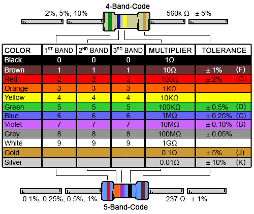

EP1000
Embedded Programming
Electronics, Arduino, The effect it has had on my waning sanity and the rabbit hole that is Tinkercad
Basic Electronics
We learnt about the basic electrical components and concepts, and also why there was a need for such components
Components
Wires
The building blocks of your circuit, you cant have a circuit without wires. The wires we will be mostly be using are male to male wires that connect into the breadboard, we will talk more about the breadboard later.
Switches
There are many different kinds of switches that serve many kind of purposes. There are the generic kinds like the push switch and the slide switch, those switches allow current to pass upon the user activating the switch. However there more other kinds that only allow current to pass in other ways. an example would be a mecury switch and a reed switch, the mecury switch has a ball that, when the switch is turned, moves towards the opposite metal contact, and that allows current through. A reed switch is abit more specific and harder to activate. whenever a magnet comes close to a reed switch, both metal contacts are magnetized towards one another. Allowing current to flow.
Resistors
The purpose of a resistor is to reduce the amount of current flowing to a component. Why is this needed? Well, when there is too much current flowing into a component, the component might not work properly, or it will just straight up break. Resistors come in different ratings for how much resistance they each have. It is determined by the coloured bands on each resistor 
This is the chart to calculate the resistance of a resistor
Diodes
Diodes are easy to understand but slightly difficult to apply, Diodes allow current to flow in only one direction, they are mainly used in conjunction with AC power supplies
Integrated circuits(ics for short)
ICs are what has revolutionized the world and made it what it is now. The invention of semiconductors has allowed us to make even more complicated circuits. Ics allow for the circuit to perform even more complicated actions and/or to control several other components. An example is a 555 IC, although it is outdated, it is a good example to how ICs made complicated circuits easier to form. The 555 IC can act as a timer or pulse generator or a delay.
BreadBoard
Breadboards are the backbone of your prototype electrical circuit, because it already has metal connections inside of the plastic shell, it ensures that no soldering is required between the parts, saving time and effort. you usually connect the live and the ground wires to the left most and right most holes, as the metal runs down the length of the breadbaord, this allows for easier access to power.

Basic Arduino coding
Lets get something straight first
I despise coding, it so fragile and prone to not working 90% of the time when i do it. A single missing ";" can cause the whole code to come crashing down
Thats because im bad at coding, although i have experience in C++, i never really bothered to really understand how coding works as there was just so much content to learn and memorise
I also dont have a passion for coding, something about writing on a laptop for 2 hours only for the code to crash and burn because you implented a line wrongly just never appealed to me
But of course, this view of mine is only because im bad at coding
So how was the process of learning arduino?
It was no different from C++, but i enjoyed it more thoroughly as there was something tangible for me to play with, EG:the blinker lights and switches
How an Arduino code works
When you boot up your arduino coding application, you are greeted with this
There are two lines already pre written for you.
Void Setup and Void Loop
writing your code below void setup means that it will only run once. You use this to establish integers and values for your components
writing your code under void loop means that it will run continously, over and over again. This means that the arduino will continuously check for changes in the circuit, examples being variable resistor values or whether a switch is pressed or not.
Speaking of variable resistor values and switches, this is a good way to segway into my next part of arduino
Arduino pins, and how to use them
Refering to the picture above, there are two kinds of input pinholes on an arduino,a digital input pinhole(in red), or a analog input pinhole(in yellow).
Digital input means that the the input must either be a 1 or a 0. An example of this kind of input is a regular push switch. it can either be up, or down thats it. Nothing more, nothing less
Analog input, on the other hand, can recieve a wide range of values, more than just the 1 and 0 of a digital input. An example of an analog input is a potentiometer. It changes its resistance based on how far the dial is turned. Arduino can then read those values and turn them into integers for the circuit to use.
The Arduino also has Output pinholes, for controlling other devices, a common example is an led. These output pinhole is marked by a tilde (~) beside the pin.
A good first practice that we did, which was essentially the equivalent to a "hello world!" program is an led blinker circuit.
It taught us how to effectively use an output pinhole and an input one. you can also customize the circuit by adding different components and adding new blocks of code
TinkerCAD
TinkerCAD is a virtual sandbox that allows students to play with circuitry to a terrifyingly accurate degree
It has a wide array of different components ranging from a simple servo motor and led to the more complicated ICS we talked about earlier.
In most of the arduino classes that we took, the lecturer uses tinkercad as it provides a good viewing angle and is a good way to clearly show all the wirings and components and also demonstrate the circuit.
We were told to play around with TinkerCAD to familiarize ourselves with arduino
i have learnt quite abit from TinkerCAD as it allowed me to experiment with virtually unlimited resouces of any kind, even those the school didnt provide for us, i could simply google a youtube tutorial on how to use it and just integrate it into my system. As simple as that
its definitely an extremely useful program, and you dont even have to download it, you can use it on your browser